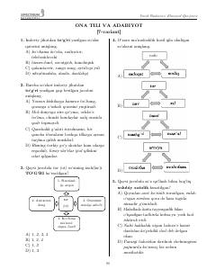

MSOna tili va adabiyot fanidan milliy sertifikat imtihoniga tayyorgarlik uchun 7-variant testlari.
Ushbu qo'llanma ona tili va adabiyot fanidan milliy sertifikat imtihoniga tayyorgarlik ko'rayotganlar uchun 7-variant test savollari va ularning tahlillarini o'z ichiga oladi. Kitobda imlo qoidalari, so'z qo'llash, fe'l va sifatlar, shuningdek, badiiy asarlar tahliliga oid test topshiriqlari berilgan. Testlar abituriyentlar va o'qituvchilar uchun bilimlarini sinash va mustahkamlashga xizmat qiladi.